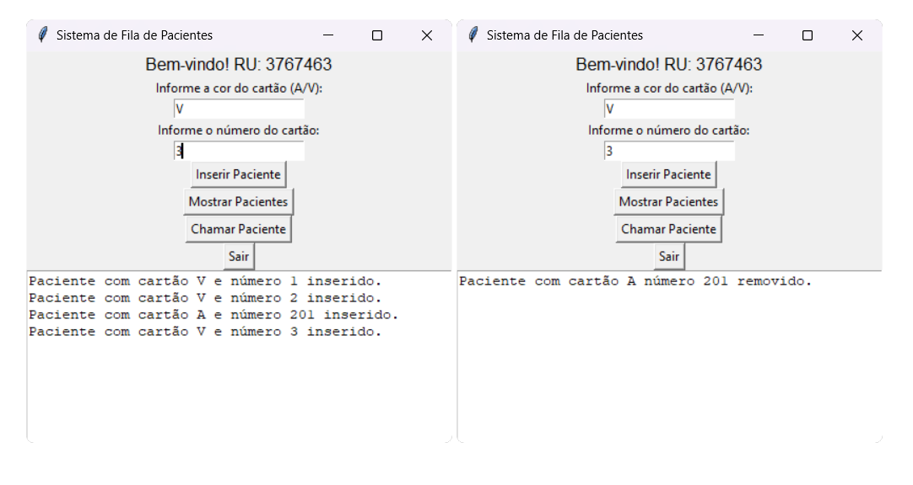
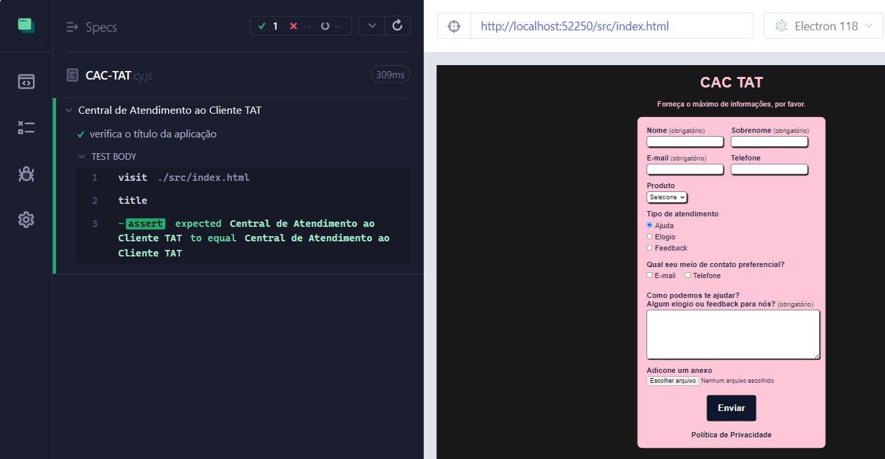

Bem vindo!
Aqui você encontrará informações sobre meus projetos,
habilidades e interesses.
Por: Lucas de Moura Francisco
Sobre mim
Olá! Meu nome é Lucas de Moura Francisco, estudante de Engenharia de Software.
Sou apaixonado por tecnologia e desenvolvimento de soluções
criativas que façam a diferença.
Se você tiver interesse em saber mais sobre meu trabalho ou em conversar sobre possíveis colaborações,
fique à vontade para entrar em contato!
Minhas Habilidades
- Gerenciamento de Software: Planejamento de projetos, gestão de mudanças,
gestão de Ciclo de Vida de Software, controle da qualidade, gestão de configuração e processos. - Desenvolvimento Web: HTML, CSS, JavaScript
- Programação: Python, Java, C#, SQL
- Testes automatizados: Cypress, selenium
- Hobbies: Modelagem 3D - Blender, Arte digital e pixel art.
Projeto 1 - Sistema de descontos
Sistema de descontos integrado, com interface em HTML e cálculos realizados em Python.
- Até 9 produtos: 0% de desconto
- De 10 a 99 produtos: 5% de desconto
- De 100 a 999 produtos: 10% de desconto
- Acima de 1000 produtos: 15% de desconto
Digite um valor qualquer, e a quantidade para o desconto ser aplicado:
Resultado:
Valor total: R$ 0,00
Valor com desconto: R$ 0,00
Desconto: 0%
Projeto 2 - Fila com prioridade
Este sistema de fila foi desenvolvido em Python com lista encadeada, utilizando a biblioteca Tkinter para criar uma interface gráfica simples. Ele permite inserir pacientes com diferentes tipos de cartões (A/V), listá-los e chamá-los de acordo com a prioridade. Pacientes com cartão A têm prioridade sobre os com cartão V, como mostrado na imagem abaixo, onde A 201 é prioritário e V1 é normal.
Projeto 3 - Tabela Hash
O projeto a seguir implementa uma Tabela Hash utilizando listas encadeadas para resolver colisões. O programa permite inserir, remover e listar siglas de estados brasileiros, armazenando-as em posições calculadas por uma função de hash personalizada.
Estruturas de Dados Utilizadas:
Lista Encadeada: Cada posição da tabela hash contém uma lista encadeada para armazenar múltiplas siglas que podem ter o mesmo índice.
Tabela Hash: Possui um array de tamanho fixo (10 posições), onde cada posição é uma lista encadeada. Função de Hash:
A posição de armazenamento é determinada pela soma dos valores ASCII dos dois caracteres da sigla, aplicada ao módulo 10. Exceção: A sigla "DF" sempre é armazenada na posição 7.
Projeto 4 - Cofre/Banco
Este projeto implementa um cofrinho digital em Java, permitindo armazenar moedas de diferentes países e converter o valor total para reais (BRL). Ele utiliza herança e polimorfismo para representar diferentes moedas e inclui um validador para garantir entradas corretas.
Funcionalidades:
- Adicionar moedas ao cofrinho (Real, Dólar, Euro)
- Remover moedas específicas
- Exibir valores totais por moeda
- Converter automaticamente todos os valores para Real (BRL)
- Exibir a sigla do país correspondente à moeda
- Validar entradas para evitar valores incorretos
Estrutura do Código:
- Classe Moeda Superclasse abstrata que define a estrutura básica de uma moeda
- Classes Real, Dolar, Euro Herdam de Moeda e implementam a conversão para BRL
- Classe Conversor Responsável por calcular o valor total convertido
- Classe Cofrinho Gerencia as moedas adicionadas e removidas
- Classe Validador Verifica se os valores inseridos são válidos
- Classe Main Interface principal para interação do usuário
Tecnologias utilizadas:
- Java
- Programação Orientada a Objetos (POO)
- Herança e Polimorfismo
Banco de dados
Bancos Relacionais (SQL - MySQL): Tenho conhecimento em bancos de dados relacionais, principalmente com MySQL. Sei criar e gerenciar databases, utilizar comandos, definir permissões e remover para usuários, cadastrar e excluir tabelas.
Também sou capaz de realizar consultas para retornar resultados específicos, utilizando SELECT, JOIN, WHERE e outras cláusulas essenciais.
Bancos NoSQL: Tenho uma noção básica de bancos de dados NoSQL, com experiência em Neo4j, MongoDB e o DynamoDB. Entendo conceitos como modelagem de grafos no Neo4j, documentos JSON no MongoDB, e o funcionamento de chave-valor e escalabilidade em bancos NoSQL.
Cursos adicionais
Recentemente, venho expandindo minhas habilidades através de cursos especializados, incluindo:
- Cypress para Testes Automatizados: Aprendizado sobre automação de testes end-to-end para garantir a qualidade e estabilidade de aplicações web.
- HTML: Fortalecimento das bases de desenvolvimento web, focando em estruturação semântica e boas práticas de acessibilidade.
- Figma: Desenvolvimento de habilidades em design de interfaces, criação de layouts e protótipos interativos de alta qualidade.
- Power BI: Aperfeiçoamento na análise e visualização de dados, criando relatórios e dashboards interativos para facilitar a tomada de decisões.
- Python: Formação sólida na linguagem de programação Python, com ênfase em automação, análise de dados e desenvolvimento web.
- Inglês (Aulas Particulares): Estudo contínuo do inglês para aprimorar minhas habilidades de comunicação e expandir meu alcance profissional.
Teste automatizado no Cypress
Em 2025, iniciei minha jornada no aprendizado do Cypress, uma poderosa ferramenta para testes automatizados, com o objetivo de aprimorar minhas habilidades em garantir a qualidade e a estabilidade das aplicações web.
Verificação de um título html:
"A jornada continua..."
Este portfólio representa um momento em minha trajetória profissional, mas como qualquer projeto, está sempre em constante evolução. Meu aprendizado não tem fim, e estou sempre aberto(a) a novos desafios, descobertas e colaborações.
Obrigado por explorar meu trabalho. Vamos conversar sobre como posso contribuir para o seu próximo projeto.